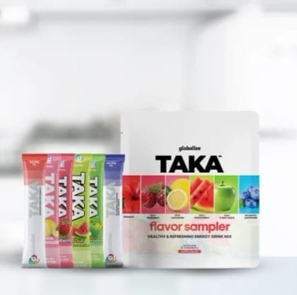
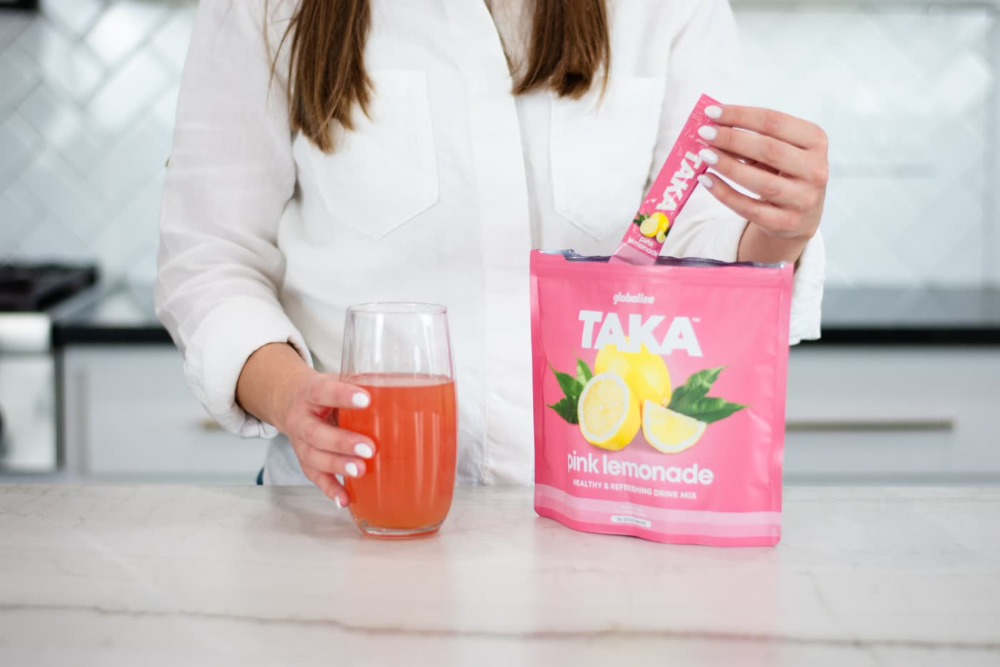
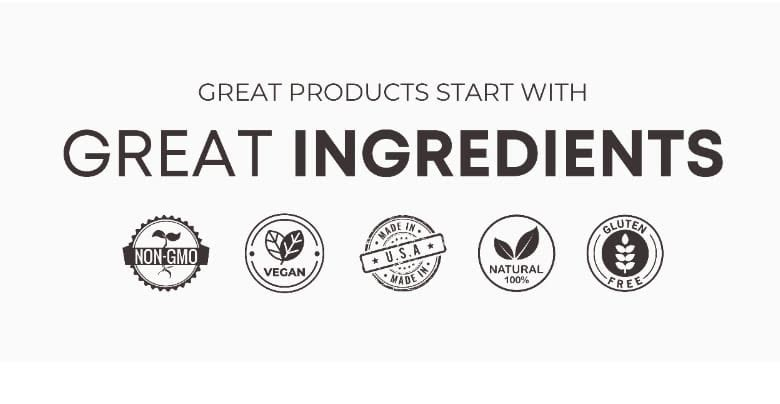
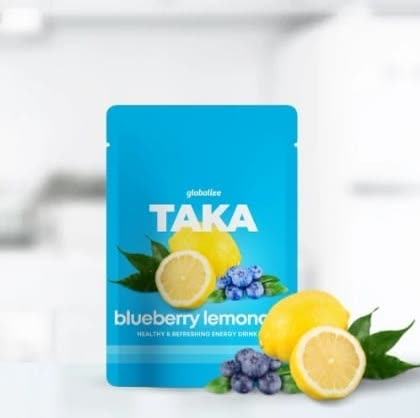
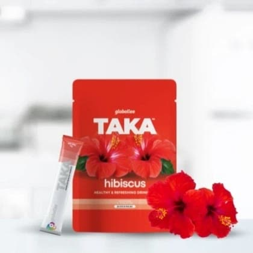
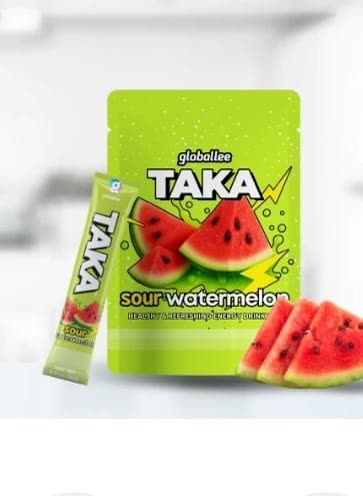
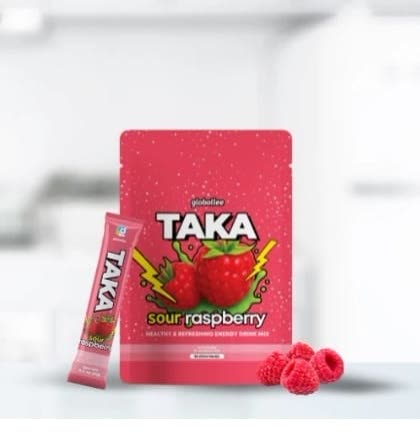
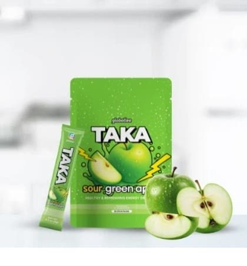
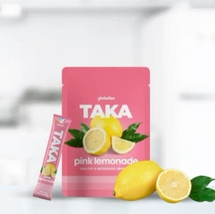
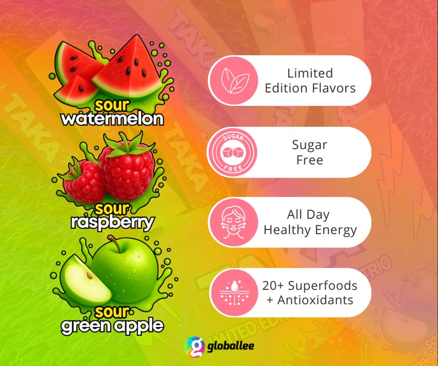

Recommended by Choice Nutrition
Taka is a plant-based drink mix with 20+ superfoods and antioxidants, no added sugar and only 15 calories a stick. Mix one into water for steady energy, a clear head and a happy gut, without the mid-afternoon crash.
Get Taka now
B vitamins, rhodiola and superfoods for energy that holds through the day, with no mid-morning or mid-afternoon crash.
Keep your focus through the afternoon slump, without another cup of coffee or a can of sugar.
Prebiotic fibre and plant ingredients to keep your gut moving and support everyday digestion.


The Variety Pack gives you all six to try, for the same price as a single-flavour bag.






"Since I've been taking this ... drink every day, it has given me more energy ... I feel more alert mentally, I'm sleeping better at night and my general overall health feels great."
Tina, Taka customer (Blueberry Lemonade)
"This product is built with the best quality ingredients that are directly evident to a trained professional. Taka, simple synergy."
Bart Quibell, owner of Choice Nutrition, helping people since 1993
Individual experiences vary.

Limited time
30 stick packs, 6 flavours, delivered to your door.
Backed by a money-back guarantee.
Tap Get Taka now, choose Taka and your flavour, add it to your cart and check out with your email. To get the lower preferred price, create a free account at checkout.
Taka has no added sugar and only 15 calories a stick. It's sweetened with stevia leaf. There's no added caffeine; a small amount of guarana is part of the plant blend. For the full ingredient list, see the product page after you tap Get Taka now.
Many people enjoy 2 to 4 sticks a day, often one in the morning and one mid-afternoon.
If you take medication, are pregnant or nursing, or have a health condition, check with your doctor or pharmacist before adding any new product.
Email the Choice Nutrition team at info@choicenutrition.ca and Bart will get back to you.